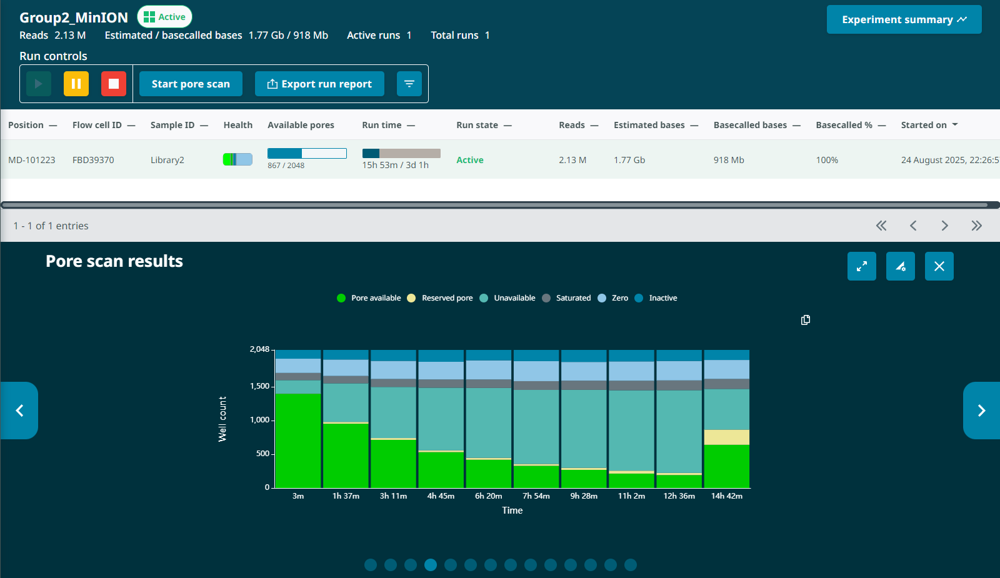
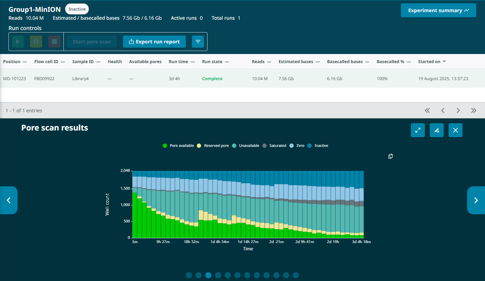
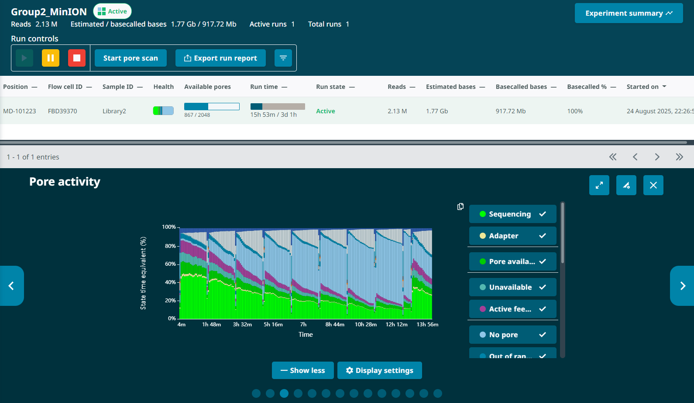
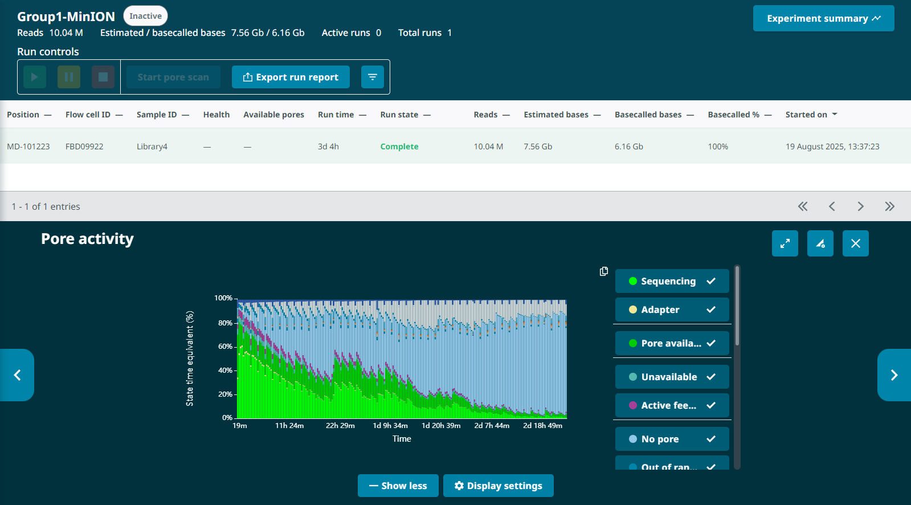
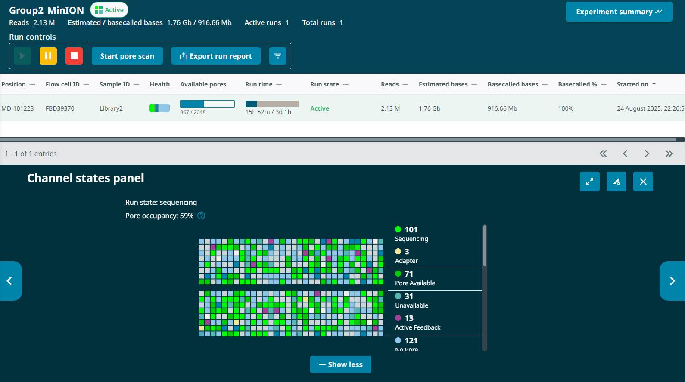
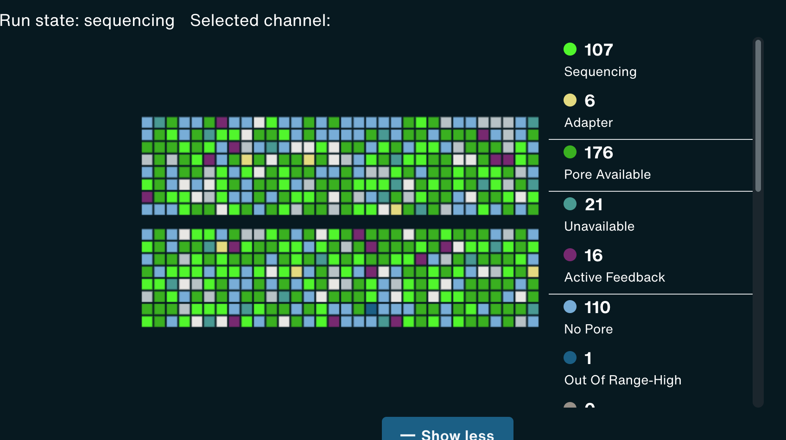
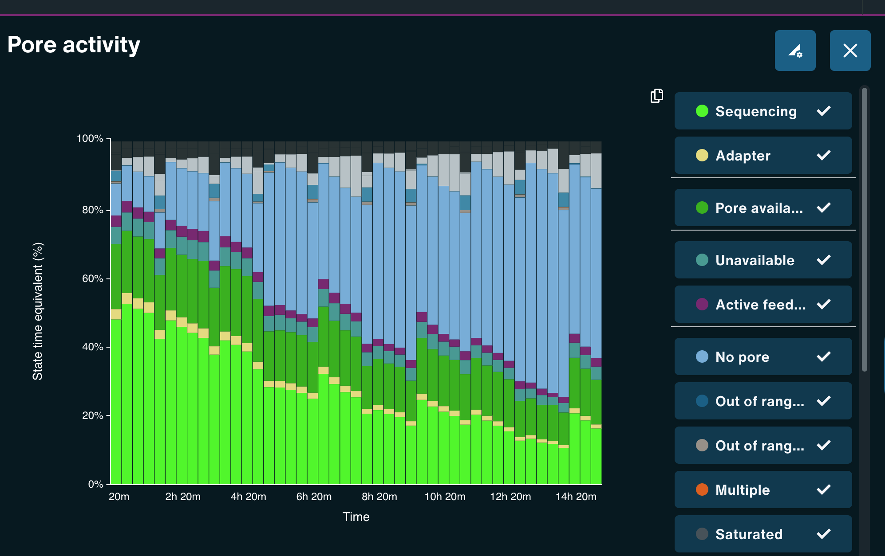
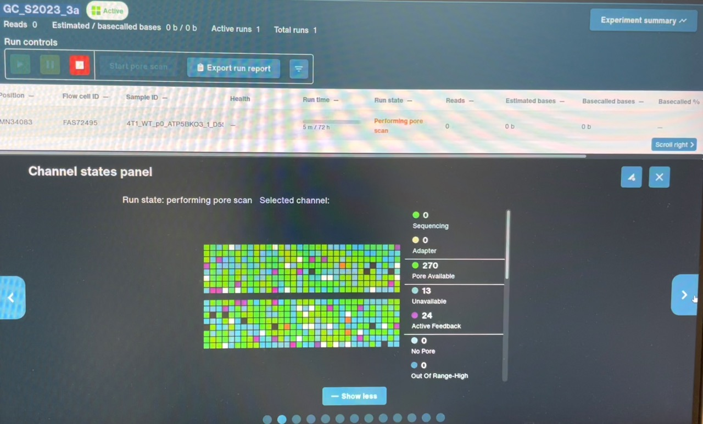
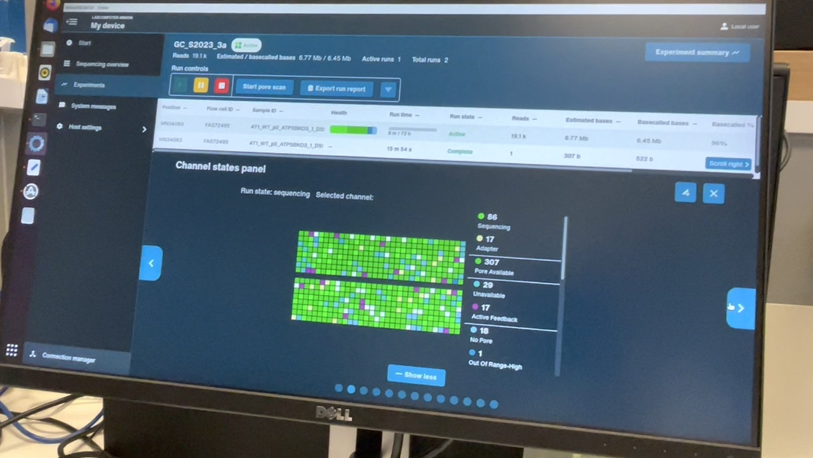
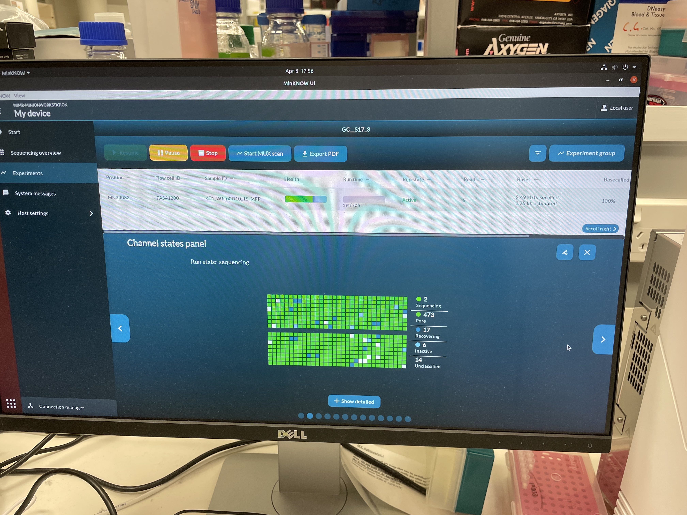

G2L2 flow cell issues
I checked the sequencing run of Group 2 Library 2 (G2L2) on a MinION flow cell (ID# FBD39370) 13 hours in and observed some weird issues:
Low output. 13 hours in, the G2L2 run had produced 820Mb of output.
For comparison, by 13 hours into the Group1 Library 4 (G1L4) MinION run, there was ~3.5Gb output.
The G2L2 run actually had a roughly equivalent number of starting pores and a higher proportion of available pores sequencing in the first half hour, so I expected higher output if anything. The low output was surprising.Fast pore loss. By the 13 hour mark, the G2L2 run had dropped from an initial 1397 pores (1482 prior to loading) to 224 pores – an 84% drop .

For comparison, the G1L4 run began with 1383 pores after loading and 668 pores at the 12.5hr pore scan (a 52% drop). Neither run had been washed at this point.

G1L4 Pore Scan Accumulation/reclamation patterns of pores in the “Channel Disabled” state. Looking at the Pore Activity chart, with the “Show more” option, I saw that, in the G2L2 run, there was a gradual accumulation of pores in the “Channel Disabled” category until a pore scan, at which time most “Channel Disabled” pores would be returned to a variety of states, mostly to “No Pore”. This accumulation of “Channel Disabled” pores would then begin again until the next pore scan, etc. The percentage of pores in this catgory would generally increase from ~2% to 25%-30% between pore scans, before “resetting”.

Looking back at the G1L4 run, this pattern is also present, but it’s not as dramatic. The percentage of pores in the “Channel Disabled” category never rose above ~14%. in the first 13hrs.

I also noticed that the percentage of pores in the “Active Feedback” category was notably higher in this G2L2 run than in the G1L4 run.
The “Channel Disabled” category is not well defined in the MinKnow interface, it’s just labelled as “Channel is disabled and awaiting another pore scan”. There’s no information on what might be causing an accumulation of disabled pores. Google wasn’t very helpful either in trying to find more detailed documentation on what accumulation of pores in the “channel disabled” category might represent. Upon searching “nanopore ‘channel disabled’,” the top results were ONT documentation on the MinKnow software with the same short description of the category – “channel is disabled and awaiting another pore scan”.
Wildflower flow cells
However, Google did turn up one other promising search result: David Eccles’ GrinGene Bioinformatics site, with his comprehensive, multi-year compilation of experiences/insights into Nanopore sequencing! There is a ton of material here that looks really useful, but the section that caught the attention of my Google search is as follows (emphasis added):
2023-Mar-09
Wildflower flow cell patterns
As I’ve reported briefly in the past, we’ve been seeing a lot of R9.4.1 flow cells with what I like to call a “wildflower” pattern, because the detailed channel plot looks a bit like a field of wildflowers, with a large mix of different types of channel classification and no obvious pattern.
What happens with these flow cells is that they tend to crash quickly. We see steep decreases in sequencing capacity, in this most recent case losing about 50% of sequencing capacity overnight, despite having a well-loaded flow cell (this was with a rapid adapter cDNA kit; it’s quite rare for us to see loading over about 75%). I’ve noticed that this sharp decrease is commonly linked to the “active feedback” and “channel disabled” pore states.
This looks quite different from the more homogeneous channel state that we expect to see on flow cells (here shown is a reasonably good channel state image; I think this was prior to loading anything on the flow cell, which is why the total read count is so low).
Unfortunately, the wildflower pattern isn’t recognised as bad in the initial flow cell QC check (the QC message for the first flow cell was “Flow Cell FAT13376 has 1059 pores available for sequencing”), and it’s only once we start sequencing that we notice this bad patterning.
I haven’t yet worked out why this is happening, but it’s not to do with sample prep. In the past, we have seen the same effect from flow cells when there’s nothing loaded on them, and also prior to loading any priming mix (i.e. when doing a 5 minute sequencing run before doing any priming). This does mean that we can do an additional channel state QC prior to priming to identify these cells... but we need to remember to do that.
It also doesn’t seem to be related to storage time (we’ve had this happen on flow cells that were checked the day after they arrived) or shipping conditions (about a year ago we had two flow cells that had a long stopover in Australia, one of which exhibited this problem, one which didn’t).
It has been challenging discussing this issue over email with ONT in the past, because every support email seems to end up with a different person. They aren’t generally aware of this problem, so almost always fall back on it being a sample loading issue (which is certainly not the case in situations where we haven’t done priming or loading). This means it can be a challenge getting replacements for these flow cells: they’re showing fine on the initial count-based QC, so don’t count as poor quality as part of the standard “fewer questions asked” warranty replacement.
This does seem to be more of an issue currently with R9.4.1 flow cells, but I thought I’d do a more full writeup just in case it ends up as an issue with R10.4.1 flow cells later on.
Wowza! David’s description of what he terms “wildflower” flow cells sounds really similar to this low-quality run, including inital high pore counts, fast pore loss despite properly loading the flow cell, and weird signatures of “channel disabled” and “active feedback” pore states. When I checked the Channel States panel for my G2L2 run, I observed the “wildflower” pattern David described.

I also noted that David’s description of “losing about 50% of sequencing capacity overnight, despite having a well-loaded flow cell” would also be similar to the G1L4 MinION run, which lost >50% of active pores in the first 12 hours. The G1L4 flow cell also exhibited a pattern of “channel disabled” pore accumulation and reclamation, though it was less pronounced than in the G2L2 run. I can’t view the progression of the Channel States panel after-the-fact, so I can’t look for the “wildflower” pattern in the G1L4 flow cell, but it seems possible this run was also compromised.
Later entries to the site indicate that David observed the same issues with R10 flow cells after their release. I also then looked through the Nanopore Community forum and found a long thread, also initiated by David Eccles, on the issue of “wildflower” flow cells. Viewing the thread requires having a Nanopore account, so here’s a pdf copy (though the images saved a little wonky). It seems many people observe that MinION and PromethION flow cells run on any sequencing platform (MinION, GridION, or PromethION) occasionally exhibit the same sequencing patterns described above and die quickly with little output.
Additional Nanopore community forum threads with examples of wildflower cells:
https://community.nanoporetech.com/posts/flow-cell-health-worsening
https://community.nanoporetech.com/posts/underloaded-flow-cell-ho
https://community.nanoporetech.com/posts/large-proportion-of-the-po
Examples of wildflower flow cells
Example images pulled from David Eccles’ Nanopore Community thread on the issue


Another example, first of the channel states before priming or loading any sample, and then after:


Example of a “good” flow cell’s Channel States:

The community consensus, after observations of “wildflower” cells with a variety of ages, storage conditions, library kits, data types, and loading states, is that the cells themselves are dysfunctional, and the pattern is not the result of user error. Unfortunately, since the issue is usually only caught after a sequencing run has been initiated, ONT is apparently very reluctant to acknowledge that it’s a flow cell issue. Consequently, it’s apparently been difficult to obtain troubleshooting support or replacement flow cells.
Next steps
One of the comments in the above Nanopore community thread indicated instances of receiving several “wildflower” flow cells from the same LOT of MinION flow cells:
We expected that this issue would have been fixed with the R10.4.1. However, we have come across several flow cells still displaying this pattern. Fortunately, for the time being, it seems to be confined to a specific LOT that we had.
Albert Carcereny, 2 years ago
Unfortunately, that means it’s quite possible I’ll have more defunct cells, since all five of the MinION flow cells I received came from the same LOT (11004308).
From now on, I will add an additional flow cell QC step before priming and loading the flow cells. After inserting the flow cell, I will start the sequencing run without priming (adding FCF+FCT) or loading (adding SB+DNA+LIB), and let it run for ~5min. This will perform an initial pore scan and show me the pores’ status, without introducing the possibility of user error. If I observe the “wildflower” pattern in the Channel States panel during this QC, I’ll have much stronger evidence that the flow cell itself is defective, and may be able to get a replacement from ONT – in that case I’ll need to take a screenshot of the Channel States panel for supporting evidence. After this QC step, I can pause the run, prime and load the flow cell as normal, and resume the run to begin sequencing my library. Even if the flow cell is a “wildflower” cell, I can get some usable data off of it, and ONT doesn’t require you to return defective flow cells to receive a replacement.
I’ve also reached out to Nanopore Customer Support to try to get a replacement MinION flow cell, which is unlikely but worth a try. Customer support Case Number: 01338416